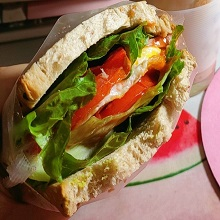
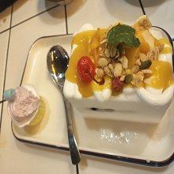
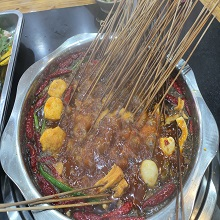

♫ 美食
今天当我们有权远离自然，享受美食的时候，最应该感谢的是这些通过劳动和智慧成就餐桌美味的人们。
主食通常提供了人类所需要的大部分卡路里。中国人的烹调手艺与众不同，从最平凡的一锅米饭，一个馒头，到变化万千
的精致主食，都是中国人辛勤劳动，经验积累的结晶 。
几乎所有的中国人都知道一个概念：北方人喜欢吃面食，而南方人则离不开米饭，这是因为一千年前形成的两大农业布局，
一个是黄河流域以黍和麦为主的旱作农业，而另一个则是长江流域的稻作农业。因此出现了中国独特的“南米北面”主食格局。
♫ 美食


